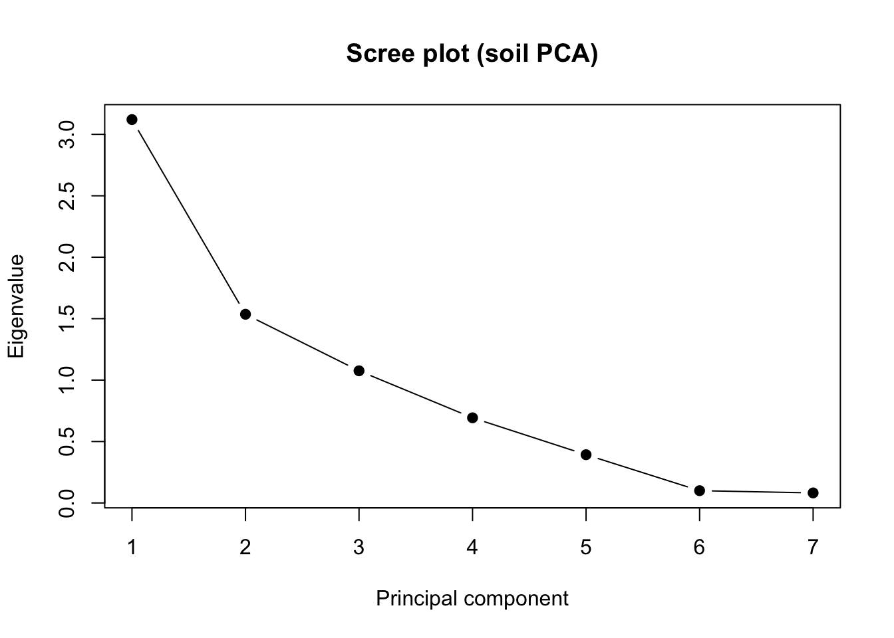
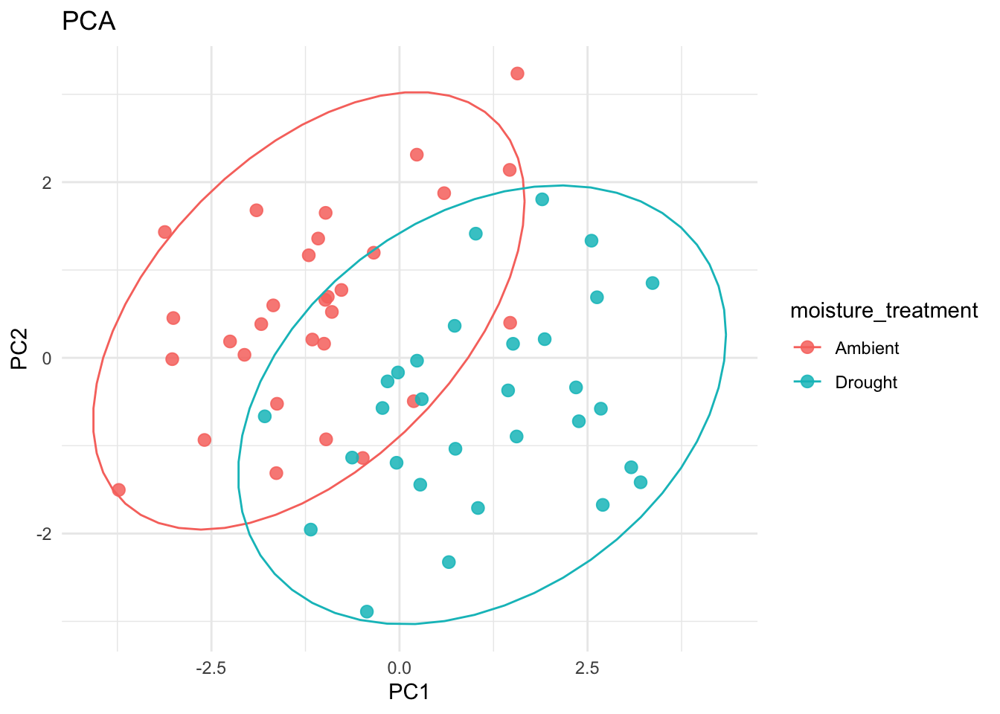
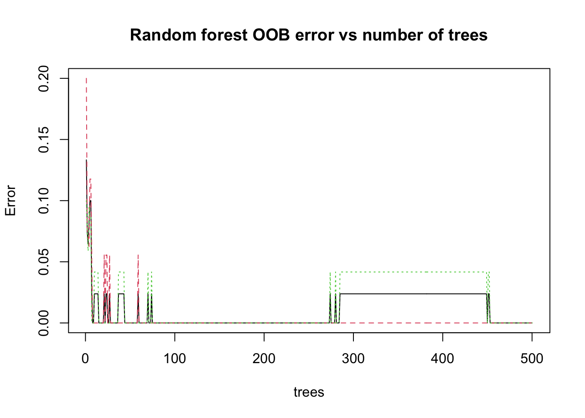
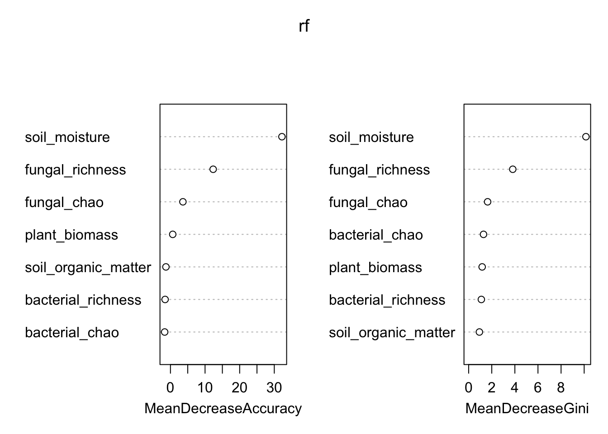

library(tidyverse)── Attaching core tidyverse packages ──────────────────────── tidyverse 2.0.0 ──
✔ dplyr 1.1.4 ✔ readr 2.1.5
✔ forcats 1.0.1 ✔ stringr 1.5.2
✔ ggplot2 4.0.2 ✔ tibble 3.3.0
✔ lubridate 1.9.4 ✔ tidyr 1.3.1
✔ purrr 1.1.0
── Conflicts ────────────────────────────────────────── tidyverse_conflicts() ──
✖ dplyr::filter() masks stats::filter()
✖ dplyr::lag() masks stats::lag()
ℹ Use the conflicted package (<http://conflicted.r-lib.org/>) to force all conflicts to become errorslibrary(readxl)
library(ggplot2)
library(psych)
Attaching package: 'psych'
The following objects are masked from 'package:ggplot2':
%+%, alphasoil <- read_excel("data/soil_df.xlsx", range = "A34:P95")New names:
• `` -> `...2`
• `` -> `...3`
• `` -> `...4`
• `` -> `...5`
• `` -> `...6`
• `` -> `...7`
• `` -> `...8`
• `` -> `...9`
• `` -> `...10`
• `` -> `...11`
• `` -> `...12`
• `` -> `...13`
• `` -> `...14`
• `` -> `...15`
• `` -> `...16`colnames(soil) <- soil[1, ]
soil <- soil[-1, ]
## PCA
# The dataset describes plant biomass characteristics based on soil moisture conditions.
# Create a figure showing PC1 and PC2 with 95% CI ellipses
## Do you see good separation of your groups on either axis?
#
soil_small <- soil[c(4:10)]
soil_small <- soil_small %>% mutate(across(c(soil_moisture, soil_organic_matter, fungal_richness, plant_biomass, bacterial_chao, fungal_chao, bacterial_richness), as.numeric))
soil_treatment <- soil$moisture_treatment
round(cor(soil_small), 2) soil_moisture soil_organic_matter plant_biomass
soil_moisture 1.00 0.13 0.15
soil_organic_matter 0.13 1.00 0.29
plant_biomass 0.15 0.29 1.00
bacterial_chao 0.16 0.15 -0.16
bacterial_richness 0.14 0.05 -0.16
fungal_chao 0.51 0.24 -0.04
fungal_richness 0.69 0.21 -0.02
bacterial_chao bacterial_richness fungal_chao
soil_moisture 0.16 0.14 0.51
soil_organic_matter 0.15 0.05 0.24
plant_biomass -0.16 -0.16 -0.04
bacterial_chao 1.00 0.91 0.50
bacterial_richness 0.91 1.00 0.43
fungal_chao 0.50 0.43 1.00
fungal_richness 0.45 0.39 0.86
fungal_richness
soil_moisture 0.69
soil_organic_matter 0.21
plant_biomass -0.02
bacterial_chao 0.45
bacterial_richness 0.39
fungal_chao 0.86
fungal_richness 1.00bart <- cortest.bartlett(cor(soil_small), n = nrow(soil_small))
bart$chisq
[1] 249.3503
$p.value
[1] 5.545715e-41
$df
[1] 21# The bartlett test shows a p-value of 5.545715e-41, confirming there is a difference between groups.
pca <- prcomp(soil_small, center = TRUE, scale. = TRUE)
summary(pca)Importance of components:
PC1 PC2 PC3 PC4 PC5 PC6 PC7
Standard deviation 1.7665 1.2393 1.0371 0.83260 0.62682 0.3163 0.28601
Proportion of Variance 0.4458 0.2194 0.1537 0.09903 0.05613 0.0143 0.01169
Cumulative Proportion 0.4458 0.6652 0.8189 0.91789 0.97402 0.9883 1.00000eig <- pca$sdev^2
pve <- eig / sum(eig)
pca_var_table <- data.frame(
PC = paste0("PC", 1:length(eig)),
Eigenvalue = round(eig, 3),
PVE = round(pve, 3),
CumPVE = round(cumsum(pve), 3)
)
pca_var_table PC Eigenvalue PVE CumPVE
1 PC1 3.120 0.446 0.446
2 PC2 1.536 0.219 0.665
3 PC3 1.076 0.154 0.819
4 PC4 0.693 0.099 0.918
5 PC5 0.393 0.056 0.974
6 PC6 0.100 0.014 0.988
7 PC7 0.082 0.012 1.000plot(eig, type = "b", pch = 19,
xlab = "Principal component",
ylab = "Eigenvalue",
main = "Scree plot (soil PCA)")
broken_stick <- function(p) sapply(1:p, function(k) sum(1/(k:p)) / p)
bs <- broken_stick(ncol(soil_small))
retain <- data.frame(
PC = paste0("PC", 1:length(pve)),
ObservedPVE = round(pve, 3),
BrokenStick = round(bs, 3),
Keep = pve > bs
)
retain PC ObservedPVE BrokenStick Keep
1 PC1 0.446 0.370 TRUE
2 PC2 0.219 0.228 FALSE
3 PC3 0.154 0.156 FALSE
4 PC4 0.099 0.109 FALSE
5 PC5 0.056 0.073 FALSE
6 PC6 0.014 0.044 FALSE
7 PC7 0.012 0.020 FALSE# Based on the scree plot and broken stick test, only PC1 is needed. The ObservedPVE is 0.446, and the BrokenStick is 0.370, resulting in a keep of TRUE.
head(pca$x) PC1 PC2 PC3 PC4 PC5 PC6
[1,] -1.8374544 0.38411556 1.4693419 0.7235925 -0.1362067 0.449612601
[2,] -2.0609147 0.03457872 1.2846193 0.3761589 -0.1264425 -0.449926211
[3,] -1.6281584 -0.52297789 -0.1417512 0.2672276 1.2048239 -0.141633353
[4,] -1.0025068 0.16089316 -0.6073260 -0.2351722 -0.5582032 -0.529530941
[5,] -0.7719125 0.77250073 -1.4358619 -0.5310790 1.1492887 -0.080980309
[6,] -2.2525062 0.18665233 1.4594479 1.3509460 -0.5131793 -0.007080687
PC7
[1,] -0.03377102
[2,] -0.11418931
[3,] -0.12469214
[4,] 0.42861906
[5,] -0.65677625
[6,] 0.32728843pca$rotation PC1 PC2 PC3 PC4 PC5
soil_moisture -0.34972099 0.4010279 0.3726752 -0.22454937 0.6769927
soil_organic_matter -0.16319231 0.3755956 -0.6149765 0.62332747 0.2451971
plant_biomass 0.02988414 0.5451340 -0.4476134 -0.65468770 -0.2669263
bacterial_chao -0.43719388 -0.3917048 -0.3140191 -0.14485370 0.1053411
bacterial_richness -0.40876040 -0.4355839 -0.2914300 -0.26793920 0.1421643
fungal_chao -0.49352823 0.1252564 0.1554038 0.18198310 -0.5802166
fungal_richness -0.49837413 0.2051300 0.2736230 0.08082459 -0.2057932
PC6 PC7
soil_moisture -0.26260749 -0.016759593
soil_organic_matter 0.01264441 0.072673825
plant_biomass 0.03089175 -0.027534479
bacterial_chao -0.01994589 -0.724115777
bacterial_richness 0.01763768 0.682595775
fungal_chao -0.58603674 0.058155953
fungal_richness 0.76535949 0.004088874# The variables contributing most to PC1 are fungal_chao, fungal_richness, bacterial_chao and bacterial_richness. The variables which contribute most to PC2 are soil_moisture, plant_biomass and bacterial_richness.
scores <- as.data.frame(pca$x)
scores$moisture_treatment <- soil_treatment
plt <- ggplot(scores, aes(PC1, PC2, color = moisture_treatment)) +
geom_point(size = 2.6, alpha = 0.85) +
theme_minimal() +
labs(title = "PCA")
plt + stat_ellipse()
# In this PCA, there is minor separation on both the PC1 and PC2 axes. PC1 and PC2 show separations of Ambient and Drought moisture treatments grouping in the bottom right and top left of the graph, respectively.
# Random Forest
library(randomForest)randomForest 4.7-1.2
Type rfNews() to see new features/changes/bug fixes.
Attaching package: 'randomForest'
The following object is masked from 'package:psych':
outlier
The following object is masked from 'package:dplyr':
combine
The following object is masked from 'package:ggplot2':
marginsoil_rf <- soil[c(2,4:10)]
soil_rf <- soil_rf %>% mutate(across(c(soil_moisture, soil_organic_matter, fungal_richness, plant_biomass, bacterial_chao, fungal_chao, bacterial_richness), as.numeric))
soil_rf$moisture_treatment <- factor(soil_rf$moisture_treatment)
str(soil_rf$moisture_treatment) Factor w/ 2 levels "Ambient","Drought": 1 1 1 1 1 1 1 1 1 1 ...set.seed(42)
treatment_train <- sample(seq_len(nrow(soil_rf)), size = 0.7 * nrow(soil_rf))
train <- soil_rf[treatment_train, ]
test <- soil_rf[-treatment_train, ]
rf <- randomForest(
moisture_treatment ~ ., data = train,
ntree = 500,
mtry = 2,
importance = TRUE
)
rf
Call:
randomForest(formula = moisture_treatment ~ ., data = train, ntree = 500, mtry = 2, importance = TRUE)
Type of random forest: classification
Number of trees: 500
No. of variables tried at each split: 2
OOB estimate of error rate: 0%
Confusion matrix:
Ambient Drought class.error
Ambient 18 0 0
Drought 0 24 0# My OOB estimate of error rate is 0%. In this random forest model, there are 0 errors when predicting ambient or drought classes 500 times.
# Based on my confusion matrix, my model is excillent at classifying drough or ambient measurements. The OOB is 0%, and the class.error was 0.
pred <- predict(rf, newdata = test)
conf <- table(Observed = test$moisture_treatment, Predicted = pred)
conf Predicted
Observed Ambient Drought
Ambient 12 0
Drought 0 6acc <- mean(pred == test$moisture_treatment)
acc[1] 1plot(rf, main = "Random forest OOB error vs number of trees")
importance(rf) Ambient Drought MeanDecreaseAccuracy MeanDecreaseGini
soil_moisture 29.9278011 27.1284137 32.2111600 10.1533399
soil_organic_matter 0.1287513 -2.8175889 -1.3061892 0.9284861
plant_biomass 1.6861292 -0.9008917 0.6596144 1.1675779
bacterial_chao -1.3277262 -1.0727864 -1.6672512 1.2851627
bacterial_richness -0.2729814 -1.8741876 -1.5448702 1.0968012
fungal_chao 2.0754457 3.2982292 3.6002336 1.6403370
fungal_richness 9.9186925 9.2879727 12.3379752 3.8164856varImpPlot(rf)
# Based on Mean Decrease Accuracy, soil moisture and fungal richness were the most important variables for classification. The same variables were also the most important for Mean Decreased Gini.
# The variables contributing most to PC1 are fungal_chao, fungal_richness, bacterial_chao and bacterial_richness. The variables which contribute most to PC2 are soil_moisture, plant_biomass and bacterial_richness.
# Summary
# My models have similar variable importance, but they are not identical. The random forest model determined the most important variables for classification were, by a large margin, soil moisture and fungal richness. The PCA showed many variables were important in a smaller quantity including, fungal_chao, fungal_richness, bacterial_chao bacterial_richness, soil_moisture, plant_biomass, and bacterial_richness. The Soil moisture and fungal richness variables are found to be important in both models at varying amounts.
# The random forest model provided a more specific set of important variables. The PCA gave several variables for PC1 and PC2, leaving the results and figure highly open to analysis and interpretation.